Trees up to 20 m tall.
20 ಮೀ ಎತ್ತರದವರೆಗೆ ಬೆಳೆಯುವ ಮರಗಳು.
20 മീറ്റര് വരെ ഉയരത്തില് വളരുന്ന മരങ്ങള്.
மரம் 20 மீ. உயரம் வரை வளரக்கூடியது.
Bark yellowish or brown; blaze cream.
ತೊಗಟೆ ಹಳದಿ ಅಥವಾ ಕಂದು ಬಣ್ಣದ್ದು; ಕಚ್ಚು ಮಾಡಿದ ಜಾಗ ಕೆನೆ ಬಣ್ಣದಲ್ಲಿರುತ್ತದೆ.
മഞ്ഞയോ തവിട്ടോ നിറത്തിലുള്ള പുറംതൊലി; വെട്ടുപാടിന് ക്രീം നിറമാണ്.
மரத்தின் பட்டை மஞ்சள் அல்லது ப்ரவுன் நிறமானது; உள்ப்பட்டை கிரீம் நிறமானது.
Branchlets angular, glabrous, sometimes with minute hairs.
ಕಿರುಕೊಂಬೆಗಳು ಕೋನಯುಕ್ತವಾಗಿದ್ದು ರೋಮರಹಿತ ವಾಗಿರುತ್ತವೆ ಕೆಲವು ವೇಳೆ ಸೂಕ್ಷ್ಮರೋಮ ಸಹಿತವಾಗಿರುತ್ತವೆ
അരോമിലമോ ചിലപ്പോള് ചെറുരോമങ്ങളോടുകൂടിയതുമായ, കോണോടുകൂടിയ ഉപശാഖകള്
சிறிய நுனிக்கிளைகள் குறுக்குவெட்டுத் தோற்றத்தில் கோணங்களுடையது, உரோமங்களற்றது, சிலசமயங்களில் நுண்ணிய உரோமங்களுடையது.
Latex cream colored, profuse.
ಸಸ್ಯಕ್ಷೀರ ವಿಫುಲವಾಗಿದ್ದು ಕೆನೆ ಬಣ್ಣ ಹೊಂದಿರುತ್ತದೆ .
ക്രീം നിറത്തിലുള്ള സമൃദ്ധമായ സ്രവം.
சாறு கிரீம் நிறமானது, அதிகளவில் உண்டாகின்றன.
Leaves simple, opposite, decussate; petiole 0.6-2.1 cm long, planoconvex, or canaliculate above, horizontally rugose, slightly sheathing at base, glabrous; lamina 7-15 x 3-7.5 cm, elliptic to narrow elliptic or narrow ovate, apex usually rounded sometimes acute, base rounded or slightly attenuate, margin revolute, coriaceous; secondary_nerves nearly parallel, and looped near margin; tertiary_nerves obscure; latex ducts clearly visible beneath.
ಎಲೆಗಳು ಸರಳವಾಗಿದ್ದು,ಕತ್ತರಿಯಾಕಾರದ ಅಭಿಮುಖ ಜೋಡನಾ ವ್ಯವಸ್ಥೆಯಲ್ಲಿ-ರುತ್ತವೆ; ಎಲೆತೊಟ್ಟುಗಳು ರೋಮರಹಿತವಾಗಿದ್ದು 0.6 ರಿಂದ 2.1 ಸೆಂ.ಮೀ ಉದ್ದಹೊಂದಿದ್ದು, ಸಪಾಟಪೀನಮಧ್ಯ ಆಕಾರದ ಮೇಲ್ಭಾಗವನ್ನು ಹೊಂದಿದ್ದು, ಕಾಲುವೆಗೆರೆ ಸಮೇತವಾಗಿರುತ್ತವೆ ಹಾಗೂ ಆಡ್ಡಡ್ಡವಾದ ಮಡಿಕೆಗಳನ್ನು ಹೊಂದಿರುತ್ತವೆ ಮತ್ತು ಬುಡಭಾಗದಲ್ಲಿ ಒರೆಯನ್ನು ಹೊಂದಿರುತ್ತವೆ;ಎಲೆಪತ್ರಗಳು 7 -15 X 3 – 7.5 ಸೆಂ.ಮೀ ಗಾತ್ರ ಹೊಂದಿದ್ದು ಅಂಡವೃತ್ತದಿಂದ ಸಂಕುಚಿತ ಅಂಡಾಕಾರ ಹೊಂದಿರುತ್ತವೆ, ತುದಿ ಸಾಮಾನ್ಯವಾಗಿ ದುಂಡಾಗಿದ್ದು ಕೆಲವು ವೇಳೆ ಚೂಪಾಗಿರುತ್ತದೆ, ಎಲೆಯ ಬುಡ ದುಂಡಾಗಿ ಅಥವಾ ಒಳಬಾಗಿದ ತಳವುಳ್ಳ ಮಾದರಿಯಲ್ಲಿರುತ್ತವೆ, ಎಲೆಗಳ ಅಂಚು ಹಿಂಸುರುಳಿಯಾಗಿರುತ್ತದೆ,ಎಲೆಗಳು ತೊಗಲನ್ನು ಹೋಲುವ ಮಾದರಿಯಲ್ಲಿರುತ್ತವೆ; ಎರಡನೇ ದರ್ಜೆಯ ನಾಳಗಳು ಹೆಚ್ಚೂ ಕಡಿಮೆ ಸಮಾಂತರದಲ್ಲಿದ್ದು ಅಂಚಿನ ಬಳಿ ಕುಣಿಕೆಗೊಂಡಿರುತ್ತದೆ;ಮೂರನೇ ದರ್ಜೆಯ ನಾಳಗಳು ಅಸ್ಪಷ್ಟ; ಕ್ಷೀರ ಕೊಳವೆಗಳು ಎಲೆಯ ತಳಬಾಗದಲ್ಲಿಸ್ಪಷ್ಟವಾಗಿ ಗೋಚರಿಸುತ್ತವೆ.
സമ്മുഖ ഡേക്കുസേറ്റ് ക്രമത്തിലുള്ള ലഘുപത്രങ്ങള്; ഇലഞ്ഞെട്ടിന് 0.6 സെ.മി മുതല് 2.1 സെ.മി വരെ, മുകളില് പരന്നും കീഴെ ഉരുുമിരിക്കുന്ന ഘടനയോ, മുകളില് ചാലോടുകൂടിയതോ, തിരശ്ചീനമായ തുരുമ്പന് രോമങ്ങളുള്ളതും, കീഴറ്റം ചെറുതായി പോളയോടുകൂടിയതാണ്, അരോമിലം; പത്രഫലകത്തിന് 7 സെ.മി മുതല് 15 സെ.മി വരെ നീളവും 3 സെ.മി മുതല് 7.5 സെ.മി വരെ വീതിയും, ആകൃതിദീര്ഘ വൃത്താകാരം തൊട്ട്് വീതികുറഞ്ഞ ദീര്ഘവൃത്താകാരമോ, വീതി കുറഞ്ഞ അണ്ഡാകാരമോ ആണ്, പത്രാഗ്രം സാധാരണയായി വൃത്താകാരത്തിലാണ്, ചിലപ്പോള് നിശിതാഗ്രം, പത്രാധാരം വൃത്താകാരത്തിലോ ചെറുതായി നേര്ത്തവസാനിക്കുന്നതോ ആണ്, അരികുകള് പിന്നാക്കം മടങ്ങിയത് ആണ്, ചര്മ്മില പ്രകൃതം; അരികുകള്ക്കടുത്ത് വളഞ്ഞ് നില്ക്കുന്ന, ഏതാ് സമാന്തരമായി പോകുന്ന ദ്വിതിയ ഞരമ്പുകള്; ത്രിതീയ ഞരമ്പുകള് അപ്രസക്തമാണ്; സ്രവക്കുഴലുകള് കീഴ്ഭാഗത്ത് ഏറെ വ്യക്തമാണ്.
இலைகள் தனித்தவை, எதிரடுக்கமானவை, குறுக்குமறுக்கமானவை; இலைக்காம்பு 0.6-2.1 செ.மீ., குறுக்குவெட்டுத் தோற்றத்தில் பிளேனோகான்வக்ஸ் அல்லது கேனாலிகுலேட், உலரும் போது சுருக்கங்கள் (ரூக்கோஸ்) அடைகின்றன, தளத்தில் உறை போன்றது; இலை அலகு 7-15 X 3-7.5 செ.மீ., நீள்வட்டம் முதல் குறுகிய நீள்வட்டம் அல்லது குறுகிய முட்டை வடிவானது, அலகின் நுனி பொதுவாக வட்டமானது சிலசமயங்களில் கூரியது, அலகின் தளம் வட்டமானது அல்லது சிறிது அட்டனுவேட், அலகின் விளிம்பு பின்புறம் வளைந்து (ரெவலுட்) காணப்படும், கோரியேசியஸ்; இரண்டாம் நிலை நரம்புகள் ஒன்றுக்கொன்று இணையானவை மற்றும் விளிம்பில் ஒன்றுக்கொன்று இணைந்தவை; மூன்றாம் நிலை நரம்புகள் அற்றவை; பால் சுரக்கும் குழாய் அலகின் பின் புறத்தில் தெளிவானது.
Flowers dioecious; male and female flowers in axillary clusters on short peduncle.
ಗಂಡು ಮತ್ತು ಹೆಣ್ಣು ಹೂಗಳು ಪ್ರತ್ಯೇಕ ಸಸ್ಯಗಳಲ್ಲಿದ್ದು ಚಿಕ್ಕದಾದ ವೃಂತದ ಮೇಲಿನ ಗುಚ್ಛಗಳಲ್ಲಿರುತ್ತವೆ. .
ആണ്-പെണ് പൂക്കള് വ്യത്യസ്ത മരങ്ങളിലുാകുന്നു; ആണ് പൂക്കളും പെണ്പൂക്കളും ചെറുപൂങ്കുലത്തുകളില് കക്ഷങ്ങളില് ഉാകുന്നു.
மலர்கள் ஒர்பாலானவை, ஈரகம் கொண்டவை; ஆண் மற்றும் பெண்மலர்கள் இலைக்கோணங்களில் தொகுப்பாக ஒர் சிறிய மஞ்சரி காம்பில் காணப்படுபவை.
Berry, globose, 5 cm across; 1-4 seeded.
ಬೆರ್ರಿ ಗಳು 5 ಸೆಂ.ಮೀ ವ್ಯಾಸ ಹೊಂದಿದ್ದು ಗೋಳಾಕಾರದಲ್ಲಿರುತ್ತವೆ ಹಾಗೂ ಒಂದರಿಂದ ನಾಲ್ಕು ಬೀಜಗಳನ್ನೊಳಗೊಂಡಿರುತ್ತವೆ.
കായ 5 സെ.മി കുറുകേയുള്ള, ഗോളാകാര, ബെറിയാണ്; 1 മുതല് 4 വരെ വിത്തുകള്.
முழுச்சதைகனி (பெர்ரி), கோளவடிவானது, 5 செ.மீ. குறுக்களவுடையது; 1-4 விதைகளையுடையது.
 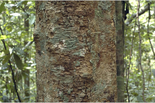
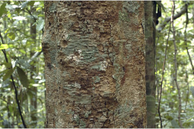

 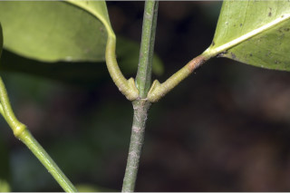
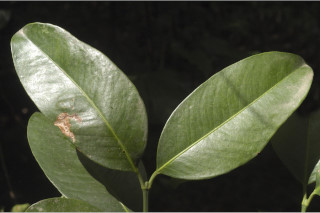
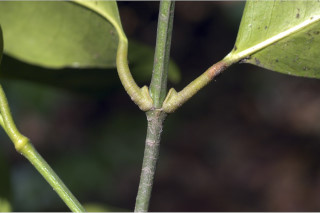
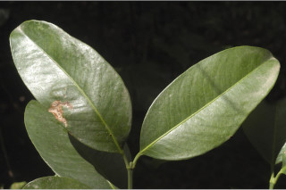

 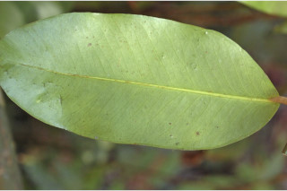
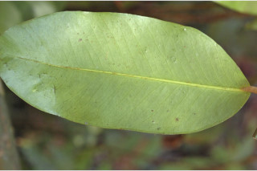

 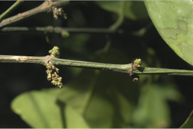
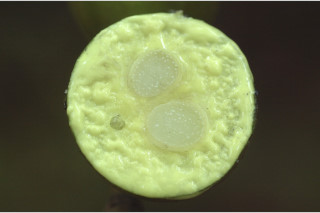
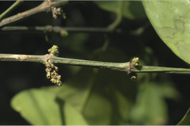
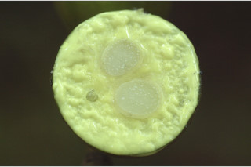